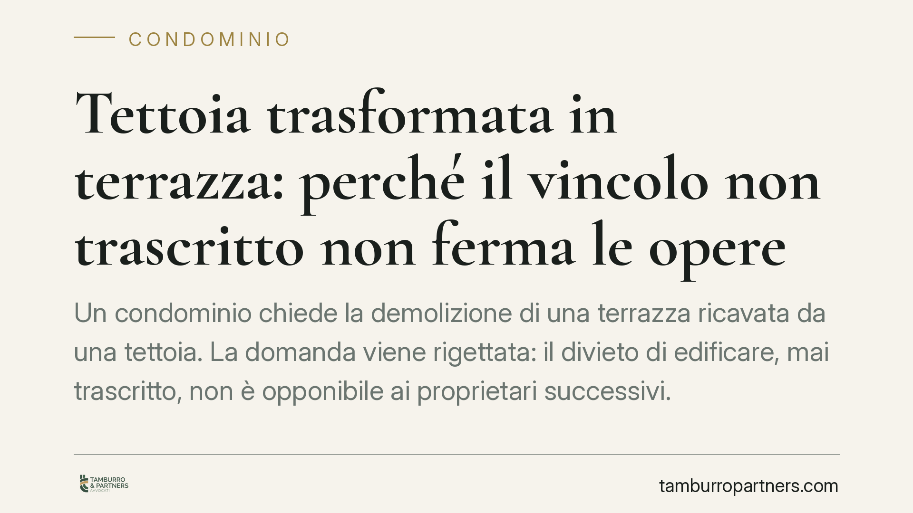

Tettoia trasformata in terrazza: perché il vincolo non trascritto non ferma le opere
Un condominio chiede la demolizione di una terrazza ricavata da una tettoia. La domanda viene rigettata: il divieto di edificare, mai trascritto, non è opponibile ai proprietari successivi. Il caso offre l'occasione per chiarire la differenza tra vincolo pattizio e sua efficacia verso i terzi, un nodo che ritorna in molte liti condominiali.

Il caso
Un proprietario trasforma una tettoia in terrazza, intervenendo su una porzione di sua esclusiva proprietà. Il condominio agisce in giudizio chiedendo la demolizione: l'opera violerebbe un divieto di edificare previsto in origine negli atti di provenienza.
La domanda demolitoria viene però rigettata. Il punto decisivo non riguarda la legittimità tecnica dell'opera, ma l'efficacia del divieto verso chi ha acquistato l'immobile in un momento successivo. Il vincolo non era stato trascritto nei registri immobiliari: per questo non risulta opponibile ai proprietari successivi.
Si tratta di un principio ricorrente, utile a leggere una categoria di controversie frequente nei contesti condominiali. Dove possibile, è buona regola verificare gli estremi esatti della pronuncia prima di trarne conclusioni operative sul proprio caso.
Inquadramento normativo
Il cuore della questione è la pubblicità immobiliare. Un divieto di edificare pattizio, che limita le facoltà del proprietario a beneficio degli altri condomini, ha natura di vincolo reale assimilabile a una servitù. Per produrre effetti anche verso chi acquista successivamente l'immobile, deve essere reso conoscibile mediante trascrizione.
L'art. 2643 c.c. elenca gli atti soggetti a trascrizione e, al n. 4, vi include espressamente gli atti costitutivi o modificativi di servitù prediali. Il fondamento dell'opponibilità ai terzi è però l'art. 2644 c.c.: il vincolo non trascritto non ha effetto nei confronti di chi ha acquistato diritti sull'immobile in base a un atto trascritto. In altre parole, ciò che non è pubblicato non vincola l'acquirente estraneo all'accordo originario.
Sul versante dell'uso del bene, occorre distinguere. Quando l'intervento riguarda le parti comuni, rileva l'art. 1102 c.c., che consente a ciascun condomino di servirsi della cosa comune senza alterarne la destinazione né impedirne il pari uso agli altri. Quando invece l'opera insiste su una porzione di proprietà esclusiva, il riferimento corretto è l'art. 832 c.c., che riconosce al proprietario il diritto di godere e disporre del bene in modo pieno, nei limiti posti dall'ordinamento. Nel caso in esame, l'intervento ricadeva sulla proprietà esclusiva e, in assenza di un vincolo opponibile, risultava legittimo.
Implicazioni pratiche
La decisione separa con nettezza due piani che spesso vengono confusi.
Il primo è l'esistenza del vincolo. Un divieto può essere stato validamente pattuito tra i proprietari originari e restare pienamente efficace tra loro. Ciò non significa che segua automaticamente l'immobile: senza trascrizione, resta un obbligo personale, non un peso che grava sul bene.
Il secondo è l'uso della proprietà. Chi interviene sulla propria porzione esclusiva esercita una facoltà ampia. I limiti esistono — decoro architettonico, sicurezza, destinazione delle parti comuni eventualmente coinvolte — ma vanno dimostrati in concreto, non presunti sulla base di clausole non opponibili.
Resta un'area grigia da non sottovalutare. Non sempre è immediato stabilire se un'opera incida solo sulla proprietà esclusiva o coinvolga anche parti comuni, né dove si collochi la soglia oltre la quale una modifica lede il decoro architettonico. Sono valutazioni di fatto, che richiedono un esame caso per caso.
Va infine tenuto distinto il profilo urbanistico. L'eventuale legittimità civilistica dell'opera non assorbe la questione edilizia: la trasformazione può comunque richiedere un titolo (permesso di costruire, SCIA o altro, a seconda dell'intervento). Civile e amministrativo viaggiano su binari autonomi e un esito favorevole sull'uno non mette al riparo dall'altro.
Cosa fare in concreto
- Verificare la trascrizione di eventuali vincoli o divieti presso i registri immobiliari (Agenzia delle Entrate – Servizi di Pubblicità Immobiliare): un vincolo non trascritto difficilmente è opponibile a chi ha acquistato dopo.
- Qualificare la natura del bene interessato dall'opera, distinguendo con precisione proprietà esclusiva e parti comuni, perché cambia la disciplina applicabile.
- Controllare il titolo edilizio: accertare se l'intervento richieda un titolo amministrativo, indipendentemente dal profilo condominiale.
- Documentare lo stato dei luoghi prima e dopo l'opera, utile sia in prospettiva difensiva sia per eventuali contestazioni sul decoro.
- Una valutazione tecnico-legale preventiva può ridurre il rischio di avviare o subire contenziosi dall'esito incerto.
In sintesi
Il principio è lineare: la pubblicità immobiliare è la condizione che rende un vincolo opponibile ai terzi. Senza trascrizione, un divieto pattizio può restare efficace tra le parti originarie, ma non segue l'immobile. Da qui la necessità di distinguere sempre tra validità del vincolo, sua opponibilità e legittimità dell'uso della proprietà.
---
*Contributo informativo a cura di Tamburro & Partners – Avv. Giuseppe Tamburro. Non costituisce parere legale.*
Ogni condominio ha una storia a sé.
Se gestisci un'amministrazione e vuoi un confronto su una specifica questione condominiale, scrivi allo studio. Ti rispondiamo entro un giorno lavorativo.